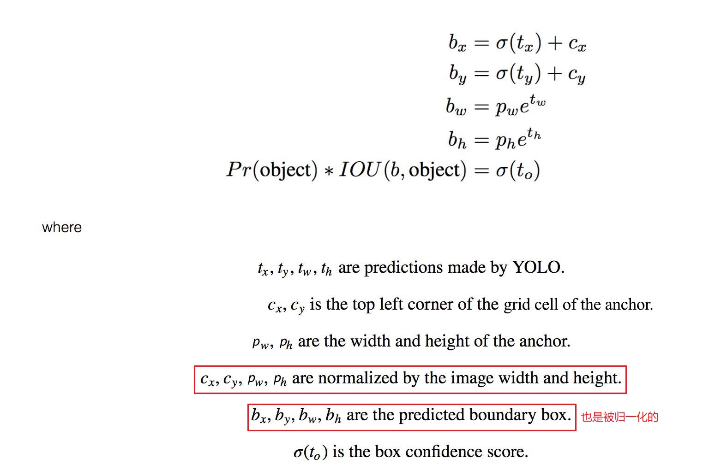
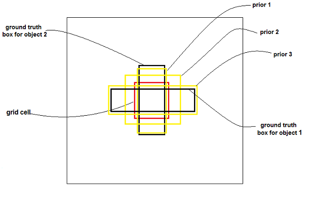
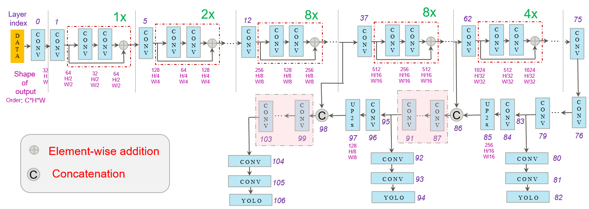

本文针对 Yolo v2 的一些处理方法和细节给出了自己的理解。不一定正确，如有错误请指正。
本文尝试了使用一系列的方法来提升检测效果。
sco
Better
Batch Normalization
- 在所有卷积层后加 Batch Normalization。
- mAP 提高了2%。
High Resolution Classifier
- Yolo v1 使用 224×224 的图像预训练分类器，并用来对448的图像进行检测。这意味着网络的卷积层要在适应新的分辨率的同时还要学习检测。
- Yolo v2 直接使用 448×448 的图像进行预训练。
- mAP提高了4%。
Convolutional With Anchor Boxes
- Yolo 通过在卷积层上加全连接层来直接预测bbox的坐标。而 Faster R-CNN 使用 RPN 网络来预测 bbox 相对于 anchor 的 offset 和 confidence。预测 offset 比直接预测坐标来得简单。
- Yolo v2 去除了全连接层，并减少了一个 Pooling 层。这样最后的 feature map 尺寸是输入的1/32。在这里，网络使用 416 尺寸而不是 448，因为作者想要最后的 feature map 尺寸为奇数。。这是因为作者观察发现，很多物体都在图像的中间，因此检测这些图像中间的物体时，只需用最中心的那个位置而不是偶数情况下的中心4个位置。(个人理解为：在这种情况下，那些在图像中心位置的物体的中心点都会落在这 栅格的中心格子中)
- 使用 anchor boxes 预测坐标的同时，Yolo v2 还对 conditional class probability 的预测机制和空间位置（栅格）做了解耦。
就是说，条件类别概率不再与 grid 耦合，因为 v2 中每个 grid 中的
B个 bbox 都有一个条件类别概率。
在Yolo v1 将输入图像划分为 的栅格，每一个栅格预测 个 bounding boxes，以及这些 bounding boxes 的 confidence scores。
每一个栅格还要预测 个 conditional class probability（条件类别概率）：。即在一个栅格包含一个 Object 的前提下，它属于某个类的概率。且每个栅格预测一组 (个) 类概率，而不考虑框 的数量。
Yolo v2 不再由栅格去预测条件类别概率，而由 Bounding boxes 去预测。在 Yolo v1 中每个栅格只有1组条件类别概率，而在 Yolo v2 中，因为每个栅格有 个 bounding boxes，所以有 组条件类别概率。
在 Yolo v1 中输出的维度为 ，而 Yolo v2 为 。如下图所示。
- 使用了Anchor box 后，mAP 从 69.5% 降到了 69.2%，但是 recall 从 81% 增加到了 88%。

Dimension Clusters
采用 Anchor 机制后遇到两个遇到 两个问题 ，其中 第一个 为 anchor 尺寸的设置问题。Faster R-CNN 等网络的 anchor 的尺寸是人工选定的，虽然网络可以通过学习来调整预测框的尺寸，但是如果一开始就给一个较合适的 anchor 的话，网络学习起来会更加的容易。Yolo v2 通过 k-means 的方式来学习到 anchor 的尺寸分布情况。对训练集中的所有标定的框，即 GT box，根据他们的 (x,y,w,h) 的值进行 k-means 聚类。如果将用 (x,y,w,h) 来代表一个 GT box，并用 4 维向量的标准欧式距离来作为距离度量的话，大的框可能会比小的框产生更大的误差，比如 (1,1,2,2) 和 (2,2,4,4) 的欧式距离为，而 (2,2,4,4) 和 (4,4,8,8) 的欧式距离为 ，而如果采用IoU的度量方式，这两对框的距离相等都是 3/4。而后一种情况所代表的两种框是前一种情况两种框尺寸的两倍。因此，可以看出，采用IoU的方式作为两个框之间的距离度量，可以避免框的尺寸带来的影响。
通过聚类，可以将所有的 (x,y,w,h) 聚为 k 类，最后得到 k 个类别中心，这 k 个类别中心就代表 k 个矩形框。论文中使用 Dimension Clusters 的结果如下图所示。

最后，聚类出的 K 个 anchor 会被分配到所有的 yolo 层上。不同 yolo 层的尺寸不一样，就是相对于 FPN。
yolo v2 只有一个预测层，上面这句话是描述 yolo v3 的。标准的 yolo v3 有 3 个 yolo 层，每一个层 3 个 anchor。
AlexeyAB 的 repo 中 yolo v2 有 5 个 anchor，在一个层上。
在网上看到另一种说法
算法过程（k-means）是: 将每个 bbox 的宽和高相对整张图片的比例 进行聚类，得到 k 个 anchor box.
算法实现代码可以参考: k_means_yolo.py
其实根据距离函数就可以看出，k-means 一定是对(x,y,w,h)进行聚类的（计算 IoU 需要用到 (x,y) ）。只不过最后不关注聚类中心的(x,y)，只关注聚类中心的(w,h)。上面代码中的操作也证实了这一点。
与手工挑选的相比，使用 Dimension Clusters 的方法效果更好。对比效果如下图所示。

其中 Cluster SSE 表示使用 sum squared error 作为度量进行聚类，Cluster IoU 表示使用 IoU 作为度量进行聚类。Anchor boxes 为采取类似 Faster R-CNN 中的方法。
Direct location prediction
前面提到了两个问题，其中 第二个 问题是：模型的不稳定性。不稳定性主要来源于预测框的 (x,y) 坐标。在 RPN 中，网络预测 和 ，因此，框的中心(x,y)计算方式为:
在原论文中， 和 前使用的是减号，估计是作者的笔误。其中， 和 为 anchor 的宽和长。如果 ，bounding box 会向右移动 anchor 宽的 倍，如果 ，bounding box 会向左移动 anchor 宽的 倍。由公式可以看出，由于 和 没有限制（取值范围没有限制），因此最后得到的 和 可以落在图像上的任意一个位置，因此一个 anchor 可能检测一个离自己很远的物体，尽管这个物体应该由离其自身近的 anchor 来检测。
Yolo v2 不采用预测 offset 的方法 (RPN 的方式)，而是延续 Yolo v1 预测 bbox 相对每个 grid cell 左上角的坐标，确保每个 bbox 的中心落在 grid cell 内。作者使用 logistic 函数来约束预测值。
对网络的输出 feature map (13×13)，Yolo v2 对每一个 grid cell 预测 5 个 bbox (对应 5 个 anchor)，每个 bbox 由 5 维向量 表示。因此，对 feature map 上的每一个位置来说，都会预测出一个 5×5 的向量。(要牢记 feature map 上的每一个位置都对应图像上的一个 grid cell )。如果这个 grid cell 的左上角距离图像左上角偏移为 （ 的单位是 1，即 grid 的个数），anchor box 的宽高为 ，那么这个预测的 bounding box 的中心点为 ，宽高为 。计算方式如下图:
虚线框为 anchor



是 bounding box 的中心相对栅格左上角的横坐标， 是纵坐标。 是 bounding box 的 confidence score。
这样，就可以预测出 5 组 bbox.
个人理解: 由于预测的值是 这 5 个数，且 可以由上面的预测值计算出来，因此不确定最后的 GT 向量是用哪一个来计算 loss。
个人猜测是 。因为这样与 Yolo v1 中的 loss 一致。因此有可能 5 个 GT 都是一样的，就像 Yolo v1 中的一样。
通过阅读损失部分源码，感觉上面的猜测不正确。应该是使用 这 5 个数进行损失计算的。
1 | // https://github.com/AlexeyAB/darknet/blob/f37ea75b28f01a87f08cb3cdea2f3d58f72224f8/src/region_layer.c#L78 |
从代码可以看出，计算每一个 bbox 的损失时，是将当前 bbox 所在 cell 对应的 GT box 的 转换成 后，再跟网络输出的预测值计算损失的。可以看出，针对同一 cell 内不同的 anchor 对应的预测框（一个 anchor 对应一个预测框），它们的 真实值都是相等的，因为 是 cell 的索引，所以对某一 cell 内的预测框来说， 都是相等的。但是， n 是 cell 内预测框或者 anchor 的索引，因此对每个预测框来说，他们的 的真实值是不等的。（这里没有说一个 cell 是否只计算 responsable 的那个 bbox 的损失，需要查看别的地方的代码）
Yolo v2 论文没有给出损失函数。网上找到的一个损失函数如下，不知正确与否。

Fine-Grained Features
上述网络上的修改使 Yolo v2 最终在 13×13 的特征图上进行预测，虽然这足以胜任大尺度物体的检测，但是用上细粒度特征的话，这可能对小尺度的物体检测有帮助。Faster R-CNN 和 SSD 都在不同层次的特征图上产生区域建议（SSD 直接就可看得出来这一点）（Faster R-CNN 有吗？），获得了多尺度的适应性。这里使用了一种不同的方法，简单添加了一个转移层 ( passthrough layer )，这一层要把浅层特征图 （分辨率为 26×26，是底层分辨率4倍）连接到深层特征图（concat）。
补充：关于 passthrough layer，具体来说就是特征重排（不涉及到参数学习），前面 26×26×512 的特征图使用按行和按列隔行采样的方法，就可以得到4个新的特征图，维度都是 13×13×512，然后做 concat 操作，得到 13×13×2048 的特征图，将其拼接到后面的层，相当于做了一次特征融合，有利于检测小目标。
Multi-Scale Training
为了使网络具有较强的尺寸鲁棒性，即对不同尺寸的输入都有较好的检测效果。Yolo v2 每迭代几个 epoch 后就会随机选择输入图像的尺寸。由于网络下采样率为32，因此尺寸都是32的倍数，从 中随机选择。这样，网络不得不学着对不同分辨率的图像都要检测得很好。
Faster
为了速度，避免使用 VGG-16。提出了 Yolo v2 专用网络 Darknet-19。
Darknet-19
特点：
- 主要使用 3×3 卷积核
- 每次 Pooling 后，通道数翻倍
- 在 3×3 卷积之间使用 1×1 进行特征压缩表示
网络参数如下图所示:

在进行检测时，将Darknet-19的全连接去掉，换上3个 3×3 的卷积层，每一个卷积层通道均为 1024，每一个 3×3 卷积后面都要接上一个 1×1 的卷积。最后的输出尺寸为 。在最后一个 3×3×512 层和倒数第二个卷积层之间加上了 passthrough layer.
附录
yolo v3 网络结构图

yolo v3 中的损失源码
1 | // https://github.com/AlexeyAB/darknet/blob/f37ea75b28f01a87f08cb3cdea2f3d58f72224f8/src/yolo_layer.c#L116 |
上述两个函数来自 yolov3 的 yolo 层代码，其中函数参数
float* x来自前一个卷积层的输出，shape = (C,H,W). 其中(H,W)表示特征图的宽高，通道C依次是 利用sigmoid 函数变换到了[0,1] 之间。先来看函数
get_yolo_box()的参数，biases 中存储的是预定以的 anchor box 的宽和高（输入图尺度），(lw,lh)是 yolo 层输入的特征图尺度，(w,h)是整个网络输入图尺度，get_yolo_box()函数利用了论文截图中的公式，而且把结果分别利用特征图宽高和输入图宽高做了归一化。既然这个机制是用来限制回归，避免预测很远的目标，那么这个预测范围是多大呢？(b.x, b.y)最小是(i,j),最大是(i+1, j+1)，即中心点在特征图上最多移动一个像素（假设输入图下采样n得到特征图，特征图中一个像素对应输入图的n个像素）(b.w,b.h)最大是(2.7 * anchor.w, 2.7*anchor.h)，最小就是(anchor.w,anchor.h)，这是在输入图尺寸下的值。
delta_yolo_box()负责计算 的误差，其参数和get_yolo_box()类似，truth 是 groundtruth box，也是用输入图宽高归一化后的（中心点，宽高）。但其中的 scale 很奇怪，根据代码
sclae = 2 - truth.w * truth.h, 其含义还没理解。
参考文章
- https://blog.csdn.net/hrsstudy/article/details/70767950
- https://blog.csdn.net/jesse_mx/article/details/53925356
- https://github.com/leetenki/YOLOv2/blob/master/YOLOv2.md